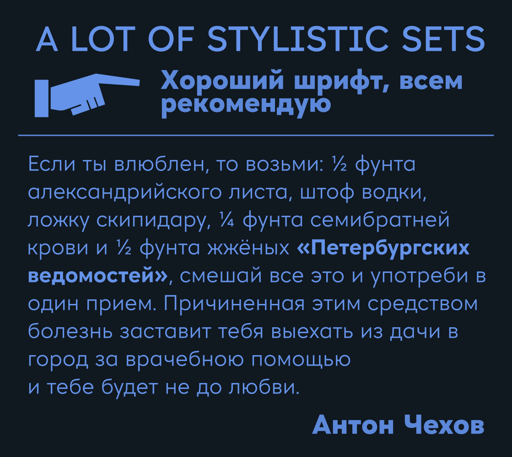
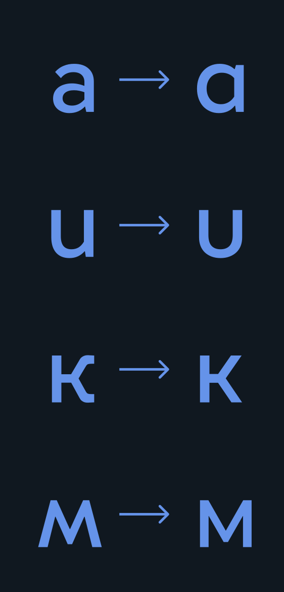

NT Sakharov
О Шрифте
NT Sakharov – геометрический гротеск, разработанный для МАОУ СОШ №200. Шрифт назван в честь советского учёного, политика и правозащитника – Андрея Сахарова. Шрифт также доступен для использования некоммерческими и государственными образовательными организациями и фондами. NT Sakharov содержит множество стилистических альтернатив, поддерживает базовые латиницу и кириллицу, основные математические символы и дроби.
Стилистические
альтернативы


Font size:
Синусоида
Font size:
Синусоида